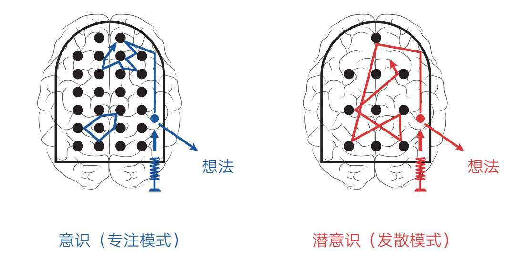
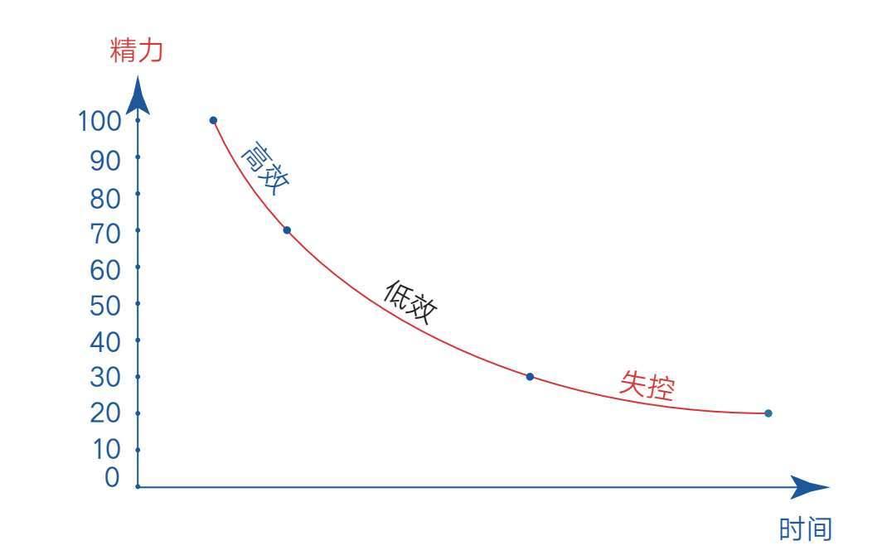
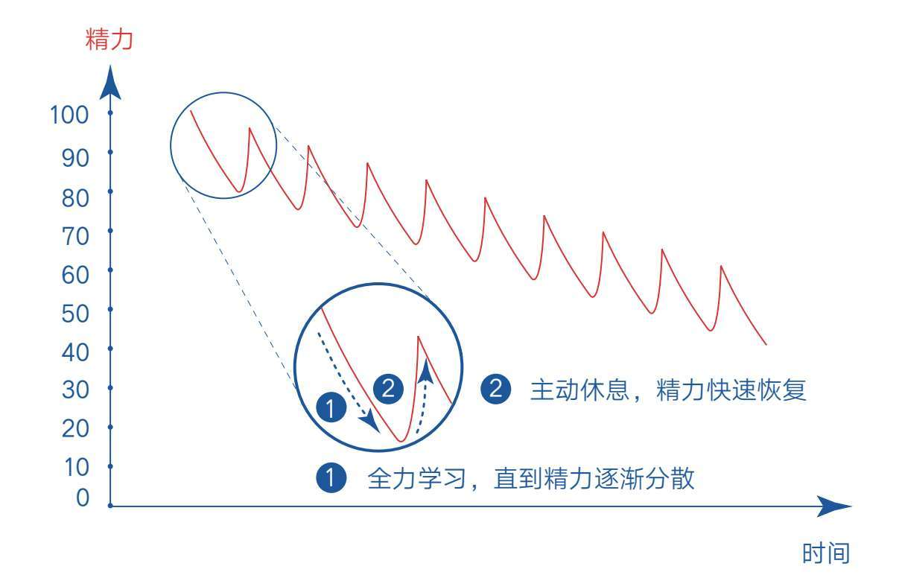
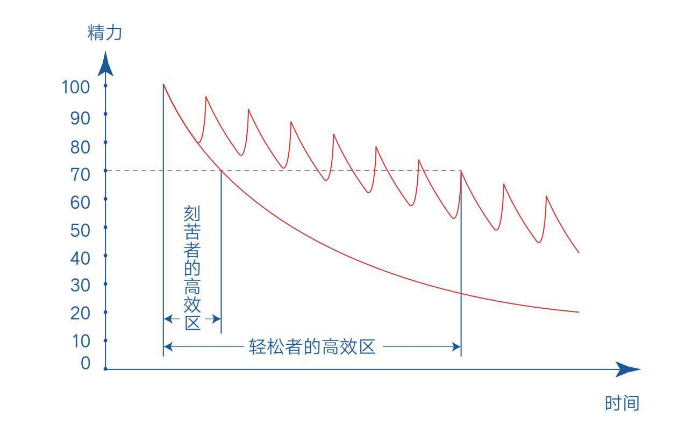
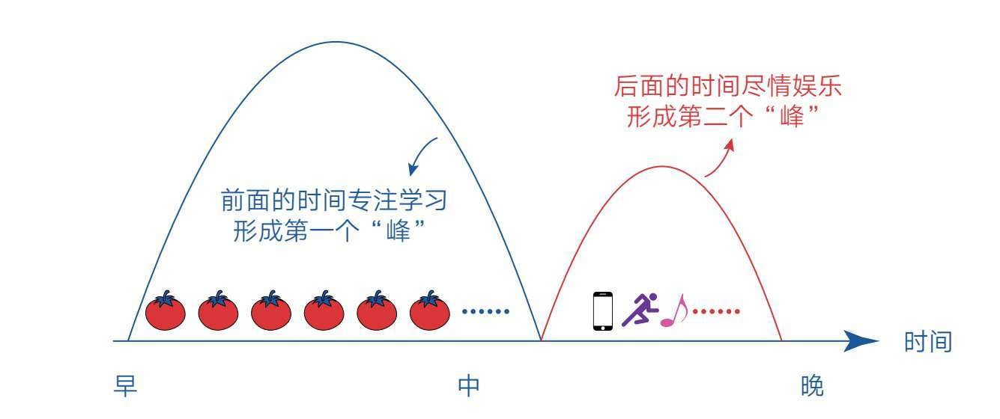
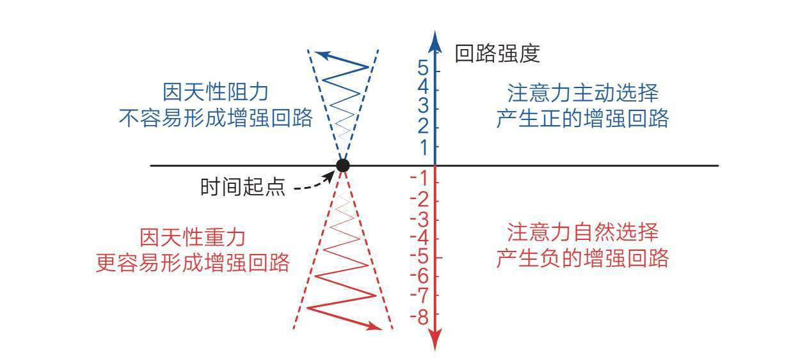
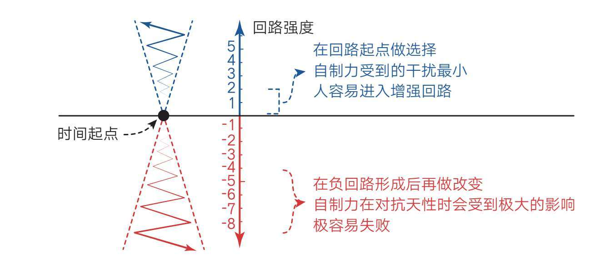

《暗时间：思维改变生活》一书的作者刘未鹏说：能够迅速进入专注状态，以及能够长期保持专注状态，是高效学习的两个最重要的习惯。
无独有偶，比尔·盖茨与沃伦·巴菲特第一次相识的时候，比尔·盖茨的父亲就分别给他们一张卡片，让他们在上面各写一个词，描述究竟是什么成就了自己。结果两个人的答案竟然一模一样，都是专注。
可见，一个人专注力的高低可能预示他今后成就的大小。只是在现代社会，专注力似乎成了一种稀缺能力。
2018年8月，我在公众号上发布了一则关于“学习成长困惑”的在线调查，前后共收到338份答卷[12]。虽然参与调查的样本不够丰富，但从调查结果中也能看出一些明显的趋势。
比如得票最高的两个困惑是“经常沉浸在担忧、幻想、焦虑的情绪里”（168票）和“总是分心走神，无法保持专注”（167票）。这说明受分心走神困扰的人不在少数。而且，他们也在留言中表达了自责、无奈和对自己失望的情绪。
如果你也因此责备过自己，那请在今后的日子里停止这种自责，因为分心走神原本就是我们的天性之一。
这背后的原因与我们大脑的记忆机制有关。
论记忆能力，人类肯定比不上计算机，无论容量大小还是记忆精度，我们都不具优势，但这并不影响我们提取记忆的速度，因为人类的大脑使用背景关联记忆的方法，即借助事情的背景或线索等提示信息来让我们想起特定内容。比如，我们根据名字、声音、时间或场景等任意要素，就能瞬间想起某人、某事，而计算机则要平等地处理所有信息，每次提取信息都要从数据库中挨个搜索一遍。背景关联记忆的方式可以极大地降低大脑能耗，弥补大脑神经元处理速度的不足。
然而，进化是把双刃剑，背景关联记忆的一个副作用就是我们感官所听到、看到、摸到、尝到、嗅到的任何信息，都会引出其他的记忆内容，又因为感官受潜意识控制，而潜意识永不消失，所以只要我们醒着，这种分心走神随时都可能发生。
比如，你在路边无意间听到一首老歌，不自觉地想起了高中的时光，此时高中的好友从回忆中冒了出来，你突然意识到好久没联系他了，于是打开朋友圈想看看他的动态，发现他正在重庆旅游，然后你的脑子里立即浮现自己上次在重庆吃火锅的场景……
我们的注意力总是这样不受控制，就像多米诺骨牌一样，只要推倒一个，其他的就会接连倒下。所以，当你发现自己总是不自觉地分心走神时，千万不要自责，因为不仅是你，所有人都一样，这是我们的天性罢了。
不过，成长就是克服天性的过程。如果我们能够比其他人更好地约束自己的注意力，就能在学习中获得更多优势。这一点，相信你通过“7个小球”的知识已经有所了解。但从技术上来说，这样的理解还不够深入，因为研究者认为专注力水平是有程度之分的，我们不仅要追求专注，还要追求极度专注。
在很多人的观念里，专注就是用毅力把自己约束在一件事情上，所以他们允许自己在过程中开些小差，只要自己看起来还在做这件事就行。他们也会在精力不足的时候继续学习，因为勉强维持学习的努力感会显得自己很专注。
然而，研究者发现，与普通人的专注水平相比，那些成就卓越的人身上体现出的则是极度专注。所谓极度专注，就是调动所有感官，全身心地投入一件事，或者说将100%的精力投入一件事。换句话说，极度专注与普通程度的专注之间的区别就是“7个小球”火力全开与只用“四五个小球”进行学习、练习或思考的区别。
所以，有研究人员指出：在短时间内投入100%的精力比长时间投入70%的精力要好。因为专注的真正动力并不是毅力和耐心，而是不断发现技巧上的微妙差异和持续存在的关注点，精力越集中则感知越细微。
这是一个重要的技术细节。如果我们细细钻研，就能打造一把披荆斩棘的学习利剑。
除此之外，极度专注还是我们灵感的来源。
作者芭芭拉·奥克利曾在《学习之道》一书中这样介绍：大脑在学习的时候有两种模式，一种是“意识”的专注模式，另一种是“潜意识”的发散模式（见图3-1）。

图3-1 意识与潜意识的工作模式
所谓专注模式，就是当我们专注于某件事的时候，前额叶皮层就会自动沿着神经通路传递信号，这些信息会奔向与我们思考内容相关的各个脑区，将它们连起来。在这种模式下，我们可能找到答案，也可能找不到答案，因为真正的答案可能并不在我们意识关注的脑区。此时就需要潜意识的发散模式来帮助我们，它能让大脑跳出原来的工作区域，让神经元随机地与不相关的区域进行连接，从而得到也许能解决问题的答案。
不过，想让潜意识工作，必须满足一个条件，就是彻底关闭清醒的“意识”，即彻底忘掉原来那件事。因为两种模式好比手电筒里打出来的光：专注模式下光束紧密，穿透力强，径直打在一小块区域上；如果拨到发散模式，光柱就会散开，虽然光的强度会降低，但照亮的范围更广。要注意的是，一个手电筒不能同时照出两种光。
所以，变聪明的秘诀就是先保持极度专注，想不出答案时再将注意力转换到另一件与此毫不相干的事情上。即事前聚精会神，让意识极度投入；事后完全忘记，让意识彻底撒手。这样，灵感和答案就会大概率地出现。
阿基米德就是因为绞尽脑汁也没有想出鉴定皇冠真假的办法，所以准备去公共浴室彻底放松一下，但在他的身体进入澡盆的那一瞬间，溢出的水就给他带来了灵感。很多例子表明，科学发现和其他智力上的突破是在当事人毫无期待、正在想别的事情时出现的。
可见，好的学习模式是，在做A的时候彻底关注A，在做B的时候彻底关注B，A和B两件事情之间有非常清晰的界线。如果在做A的时候想着B，在做B的时候又想着A，那么意识工作的深度不够，潜意识也无法顺利开启，这种边界不清的习惯对能力提升伤害很大。李大钊也说过：“要学就学个踏实，要玩就玩个痛快！”说明界线分明的习惯对人性情和能力的培养都很有好处。
了解了极度专注的好处，相信你一定希望自己也具备这种能力。事实上，前文提到的“元认知”“写下来”等方法已经包含了提高专注力的相关技巧，但要想达到极度专注的状态，我们还需要进一步学习更好的方法和策略。
本节要点
1.分心走神是我们的天性，因为大脑采用背景关联记忆的方法。
2.在短时间内投入100%的精力比长时间投入70%的精力要好。
3.好的学习模式是，在做A的时候彻底关注A，在做B的时候彻底关注B，A和B两件事情之间有非常清晰的界线。
很多人羡慕学霸们能长期保持极度专注，于是开始效仿，相信自己只要足够刻苦，也能达到这样的学习状态，然而现实往往事与愿违——仅凭意志力，他们不仅无法长时间保持专注，还会让学习过程变得很煎熬。因为一个人要想达到长期极度专注的状态，需要多种要素共同配合，比如难度、兴趣、环境、情绪、意义等。
·学习内容不能太难，否则人很容易因畏难情绪而逃避走神；
·学习内容最好也是感兴趣的，因为人们会对感兴趣的内容投入更多精力；
·学习环境也非常重要，因为人是感官动物，我们的所见所闻会极大地影响自己注意力的集中程度，如果身边有很多干扰和诱惑，人很难保持专注；
·一个生活平静、情绪平稳、没有烦心事的人更容易保持专注；
·如果一个人能强烈感受到学习的意义，他的注意力也会更加集中。
所以，仅凭毅力，我们很难真正保持长期专注，如果盲目坚持，我们还可能溃败或倒退。比如，一位“考研党”的经历就证明了这一点。
她说：“自从开始准备考研，我就拿出了前所未有的执着和毅力，天天只想着学习，连吃饭时都要听音频。前几个月更是天天五六点起床，但不知道是不是因为战线太长，我有些疲劳，到后面自制力反而不如前几个月。我有时候累了，觉得应该合理放松一下，结果瞄了几眼小说就又陷入失控状态，什么都不管不顾，没心思考虑任何事情。等缓过劲儿，发现已经过了三四天了，白白浪费了时间，我又开始自责和焦虑。更不解的是，别的同学看书看累了，玩两局游戏就又能投入学习，而自己一放松就像跌入地狱一样……”
这个场景是不是很熟悉？
我们都曾为了能名列前茅而自我打气、暗下决心，以为只要有超过常人的刻苦，就一定能够成为老师心中的骄傲，成为同学眼中的榜样，于是拿出“头悬梁、锥刺骨”的精神，不闲聊、不娱乐、不浪费一点时间，哪怕精疲力竭也要强打精神再逼自己多学一点。
但在很多情况下，英雄式的开头却没有带来英雄式的结尾。在足足体验了一把痛苦的自虐后，我们不仅学习成绩提升不明显，甚至连信心都被磨灭了——这么努力居然还不行，大概自己天生就不是学习的料吧！
然而，事实并非如此，只是我们普通人在面对困难时通常只知道用毅力、努力或刻苦来应对，一旦这招失效，我们就束手无策了。事实上，就专注力而言，我们与其用毅力追求长时间的持续专注，不如用另一种“偷懒”的方式追求短时间的间歇专注。
所谓间歇专注，就是只要开始学习就全力以赴，尽量保持极度专注的状态，哪怕保持专注的时间很短，也是有意义的；一旦发现自己开始因为精力不足而分心走神，就主动停下来调整片刻。
这个方法背后的原理正是研究者们提出的建议：在短时间内投入100%的精力比长时间投入70%的精力要好。所以，新的思路就出现了：既然有效学习的关键是保持极度专注，而非一味比拼毅力和耐心，那我们就应想办法制造多个极度专注的片段，然后将这些片段加起来，就可以得到长期极度专注了。
为了更好地理解这一点，我们可以把人的精力想象成一桶水（研究者发现每个人每天的精力是有限的），有的人总量多些，有的人少些，但只要在困难的事情上消耗精力，精力桶的水位就会慢慢下降。
问题就出在这里，那些持续刻苦、争分夺秒、舍不得休息一下的人，他们的精力总量势必呈一条持续下降的曲线（见图3-2）。

图3-2 刻苦者的精力变化曲线
也就是说，他们起初状态很好，效率也很高，但精力一旦消耗到一定程度，比如到70%以下的水平时，注意力就开始不自觉地涣散，思考速度放缓，如果精力继续消耗，学习效率就会进一步降低，很容易出现分心走神的情况。
但是这种信号对于刻苦者来说，仿佛是在提示自己该让意志力出场了，毕竟身边人告诫过自己：学习就是要吃苦的，所以不能因为有点累就去休息，而应该用意志力让自己坚持下去——这不就是所谓的努力、刻苦吗？于是他们舍不得浪费一点时间，认为在痛苦中前行才是努力的表现，越痛苦、越坚持，越刻苦、越感动，因此，他们采取的策略也不可能是停下来休息，而是强迫自己更刻苦、更努力，做别人做不到的努力，即使昏昏欲睡，也要强打精神。
刻苦者看似无比勤奋，可效果却越来越差，过程中感受到的多是痛苦而不是乐趣，精力消耗严重，以致一旦放松就完全不想再次投入，他们更容易沉溺于舒适的娱乐活动。这是因为克服困难和抵制诱惑都需要消耗意志力，而此时，他们的精力已经快消耗光了。
反观那些轻松的学霸，他们学习时从不过度消耗自己，只要感到精力不足，就停下来主动休息，这反而使他们精力桶的水位得到快速回升。如图3-3所示，他们的精力曲线呈波浪状，这种循环能使精力水平一直保持在高位，所以即使接近一天的尾声，他们依然有能力抵御诱惑，不会滑入意志失控的深渊。

图3-3 轻松者的精力变化曲线
如果我们把精力水平高于70%的区域视为高效学习区，那么对比二者不难发现，轻松者比刻苦者的高效学习区要大得多（见图3-4）。

图3-4 高效学习区对比
这个曲线足以说明“极度专注+主动休息”的意义和优势。优势日积月累，一些人领先于另一些人就会成为必然。而领先的那些人居然还很轻松，这对崇尚刻苦的人来说，无疑是个让人惊愕的认知反转。
那我们该如何培养“极度专注+主动休息”的行为模式呢？
一个非常有效的办法就是采用番茄工作法。番茄工作法由意大利人弗朗西斯科·西里洛创立于1992年，其核心就是先极其专注地学习25分钟，然后休息5分钟，如此循环往复。这种工作法有点类似于高强度间歇性训练，而且它符合学霸模式的所有特征——极度专注、主动休息、循环往复。
为什么番茄工作法把每次学习时间定为25分钟？因为这符合大脑工作的规律。研究表明，如果要高度集中注意力去完成一件简单但枯燥的任务，人们的注意力只能集中20分钟左右，然后就会出现错误，所以25分钟的学习周期适合大多数人。
当然，这个方法可能不适合在课堂上使用，毕竟课堂时间是由老师掌控的，不过，老师也可以依据这个特点来把握教学节奏，比如在一节课上了25分钟左右时给同学们讲个笑话放松一下，以此提高课堂学习的效率。
在自习、周末、假期这样相对自由或完全自由的时间里，我们可以使用该方法来主动安排时间，哪怕你能保持极度专注的时间很短，也要刻意遵守这种规律——只要坐下学习，就全力以赴；一旦开始分心走神，就主动休息。千万不要长时间坐在位置上不温不火地“磨洋工”。
当然，要想充分发挥番茄工作法的功效，以上信息是远远不够的，我们还需要特别注意以下事项。
首先，尽可能移除视线范围内所有可能让自己分心的事物，因为人是感官动物，外在环境对我们的影响是最直接也是最大的。像手机这样的消息源和娱乐源，一定要放到远离自己的地方，远到我们无法轻易拿到它。千万不要在这件事情上打折扣，因为我们若把手机放到附近，大脑会不自觉地去追踪手机，进入分心状态。如果在学习过程中必须使用某些电子产品，那最好把这部分内容放到最后集中处理。
其次，如果在学习的过程中发现自己分心走神了，就把脑中的杂念写到身边的本子上，告诉自己等学习结束后再去处理。这样做很容易让注意力回到当前的学习任务上。
再次，一定要主动停下来休息。从专注状态中跳出来，让大脑进行短暂休息，这非常有利于我们将刚学到的东西转移到长期记忆[13]中，为后面新的学习腾出思维空间。我们感觉不到这个过程，但它跟学习过程同样重要，所以千万不要跳过休息环节。
同时，在休息的过程中，也千万不要用手机进行娱乐。要想让休息产生学习的效果，就不能在休息时让新的信息输入大脑。研究表明，用手机进行娱乐看上去让我们的大脑得到了放松，但实际上它仍在不断给大脑输入新的信息，给大脑带来巨大的认知负担。所以，在休息期间，不上网、不发短信、不看书，什么都不做，有利于巩固刚刚学到的东西。小睡一会儿或者干脆什么都不做，这并不是在偷懒，相反，你是在提高自己的效率。另外，在休息的时候适当运动一下，比如散步或慢跑，也是非常有益的。
间歇性学习早已成为学习界的共识。研究者发现，一天中用10小时死记硬背，效果远不如将10小时的学习任务安排在10天中完成。这是因为学习之后，大脑需要一段空白时间去巩固所学内容。如果我们一次性集中学习很多内容，大脑巩固它们的时间就会很少。同理，研究者们也发现，学习可以在睡梦中进行，因为睡眠会巩固我们白天所学的内容。所以，熬夜学习有时反而得不偿失，而按时休息反而效率更高——这也是刻苦者和轻松者效率对比的另一个体现。
最后，要灵活掌握学习时间。如果你只能集中注意力5分钟，那就在5分钟后适当休息；如果你进入了状态，25分钟过去后还想继续学习，也完全没问题，你感觉累了，就可以停下来，并适当延长休息的时间。一项对时间记录应用程序数据的分析发现，工作效率高的人的平均持续工作时间为52分钟，休息时间为17分钟。关键在于，这些超级工作者专注工作时，他们专心致志；而当他们休息时，他们也真的是在休息。
现在，你一定已经理解番茄工作法就是间歇专注在小块时间中的运用，但如果面对寒暑假这样的大块时间，我们又该如何进行间歇专注呢？
这是一个很现实的学习场景。
寒暑假期间，很多人想利用这些自主时间来提升自己。但经历过的人都知道，想在大块的自由时间里高效学习其实非常难，稍有不慎就会因为规划模糊而陷入低效状态，或因沉迷娱乐而进入失控状态。不过，只要我们学会用双峰模式规划时间，就可以避免这个问题。
所谓双峰模式[14]，就是把可用的大块时间分成两部分：先在第一部分时间里（通常是上午或最开始学习的时间）进行深度学习，此时尽可能保持极度专注，形成第一个“峰”；再在第二部分时间里处理其他事情，包括放松和娱乐，此时也应尽情投入，形成第二个“峰”。
如果用图形来示意，我们会发现双峰模式是一个放大版的间歇专注，也是一个大号的番茄时间（见图3-5）。

图3-5 双峰模式
双峰模式最大的好处就是兼顾了要事优先和劳逸结合，它让我们在提高学习效率的同时不再害怕娱乐的干扰，我们甚至可以主动拥抱娱乐，只要娱乐活动是自己主动安排的，且在完成重要的任务之后进行，这种放松就是积极可取的。好的学习需要劳逸结合，经过放松休息，大脑才能更好地恢复精力，并投入第二天的学习中。
过于勤奋的人总想将全部时间用于学习，这样做虽然精神可嘉，但并不科学，而且从长远看也不可持续。事实上，我们不可能也没必要将全部的时间用于学习或提升自己，因为我们每天能够处于深度学习状态的时间是有限的，最多也就4小时。
所以，如果你是学生，又正好处于假期，那就请使用双峰模式来安排时间——每天上午用“在学校上课或考试的节奏”来学习和做作业，完成任务后，就把学习任务放到一边，尽情地玩耍。千万不要磨磨蹭蹭一整天，学也学不好，玩也玩不尽兴，更不要先娱乐再学习，否则你会直接陷入低效、懒散、怠惰的泥潭。
另外，我建议你在学习文化课之余主动培养一个与之无关的技能来打发时间，比如你可以练习舞蹈、钢琴或魔方等。因为拥有这些技能比一味地看手机或玩游戏不仅看起来更酷，而且它们可以激活大脑中负责运动的脑区，关闭已疲惫不堪的抽象逻辑脑区。这种交替使用脑区的积极休息使大脑的利用率更高，比起单纯地看手机、玩游戏等消极休息，它也能使大脑得到更好的放松。所以，当你听到有人说“学习才是最好的休息”这样的话时，千万不要想当然地认为对方是在“打鸡血”。如果对方遵循类似“一文一理、一动一静”的搭配方式，那他很可能是个学习高手。
一定要先做重要的事。这是我在专注力这个主题上想提醒你的最后一点，因为注意力的使用会有“增强回路”效应。
所谓增强回路，简单地说，就是你做了一件事，它的结果会强化你做下一件事情的动机。就像两个小孩发生了争执，一个小孩打了一拳，另一个小孩就更用力地踢一脚，他们每一次反应都会强化矛盾，升级暴力。我们对注意力的使用同样遵循这个规律，最初的选择会影响行为自动增强的方向。
所以，如果我们一开始就娱乐，那么我们的注意力就会被好玩有趣的事情一路吸引，回路不断增强，注意力呈“无限扩散”状态。同时，情绪一旦适应了轻松有趣的状态，便会期待获取更多轻松有趣的信息，这样又形成了一个情绪增强回路。一天才刚开始，注意力和情绪就受到了影响，面对困难、枯燥的学习和工作时，就不容易进入状态了（见图3-6）。

图3-6 注意力的增强回路
注：图上水平的线代表正负回路分隔线，上方代表正回路，下方代表负回路
反过来，我们也可能进入另一种状态。如果每天起床后我们能刻意避开轻松和娱乐的吸引，先去读书、锻炼或做作业，精力就会呈聚合状态，并自动增强。比如，起床后先去阅读，读得越多，脑子里的问题和感触就越多，反过来又会产生更强烈的阅读欲望，回路逐渐增强。行动回路一旦增强，我们就会进入高效和充实的状态，此时我们哪还有精力去关注那些可看可不看的消息呢？注意力的增强回路是正向的还是负向的，很大程度上取决于我们最初的选择，这也是老生常谈：要事第一！
当然，启示还不止这些，如图3-7所示，在增强回路的起点，做出有利选择所消耗的自制力是最小的，如果等负的增强回路形成，再想改变就难喽！

图3-7 在增强回路起点做选择难度最小
注：图上水平的线代表正负回路分隔线，上方代表正回路，下方代表负回路
好比你在沉迷游戏已久、各种短视频刷个不停的时候，再想心无杂念地学习，怕是没那么容易了！所以，好钢要用在刀刃上，在初始阶段，强迫自己先做重要的事情，一旦进入正向的增强回路，你便能拥有强大的专注力。事实上，这也是增强自制力、提升行动力的秘密，且这个秘密适用于所有人。
最后，我想用万维钢[15]的一段话来结束这个话题，这段话总在我犹豫不决的那一刻起关键作用。
现在你有空闲时间，摆在你面前的是一本书和一部手机，你拿哪个？其实拿起哪个来，你都可能花很多时间在上面，关键就在于那一刹那的选择。选择书的那一刻可能有点痛苦，一旦读进去就不痛苦了。
共勉！
本节要点
1.与其用毅力追求长时间的持续专注，不如用“偷懒”的方式追求短时间的间歇专注。
2.优等生们从不过度消耗自己，只要感到精力不足，他们就停下来主动休息。
3.小块时间用番茄钟，大块时间用双峰模式，其核心都是间歇专注。
4.一定要先做重要的事，让注意力形成正向的增强回路。